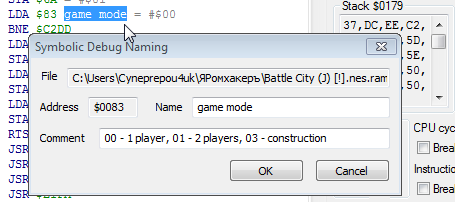

Содержание
Добавляя комментарии на RAM адреса, можно сделать незнакомый код более читаемым и понять его значение. В комментариях на код можно вкратце указывать что именно он делает.
После добавления/редактирования/удаления комментария через Hex Editor или Debugger, эмулятор автоматически становится на паузу. Если он уже стоит на паузе, то ничего не изменится.
Сняв в Debugger'е галочку Symbolic debug, можно временно отключить отображение своих комментариев.

Чтобы удалить комментарий, достаточно удалить текст, записанный в поле ввода Name. Удобно, что при открытии окна Symbolic Debug Naming этот текст уже выделен целиком, остается лишь нажать Backspace/Ctrl + X и сохранить.

Также можно отредактировать .nl файл, в котором хранится комментарий, сохранить файл, а затем нажать в Debugger'е кнопку Reload Symbols.
Комментарии могут иметь одинаковые названия для разных адресов, не обязательно каждый раз придумывать что-то уникальное.
Чтобы добавить комментарий на код, кликни в Debugger'е правой кнопкой по адресу слева от инструкции. В окне Symbolic Debug Naming введи имя комментария в поле ввода Name, этот текст будет отображаться синим цветом.

При желании можно также добавить пометку в поле ввода Comment, которая будет отображаться серым цветом под основным комментарием.
Без наличия текста в Name комментарий создать через Debugger не получится, даже при наличии текста в Comment. Это можно сделать лишь при ручном редактировании .nl файла.
В старой версии эмулятора не поддерживаются символы кириллицы, а размер текста в Name ограничен 30-ю символами.
Поле Comment подходит для подробных заметок. Напиши что делает данная инструкция, вкратце укажи для чего нужна подпрограмма и какие регистры можно без проблем в ней использовать, и так далее.
Комментарий, добавленный на адрес, отображается только в том случае, когда Debugger распознал по этому адресу некую инструкцию. Его можно насильно отобразить только если перейти по этому адресу самостоятельно, например через кнопку Seek To. С этим часто сталкиваешься при переписывании кода. Нужно вручную отредактировать файл с комментариями под обновленный код, чтобы старые комментарии вновь были видны уже по новым адресам.
Добавленный комментарий на адрес NES Memory будет также отображаться там, где этот адрес используется в качестве операнда инструкции. Например, после добавления комментария на адрес $C2DD справа от инструкции условного перехода

Серый текст из Comment не отображается в операнде инструкции.
В старой версии эмулятора комментарии перезаписывают адрес операнда, а не отображаются рядом с ним.
Добавить комментарий правым кликом можно лишь по 16-битному адресу. Если адрес 8-битный, он недоступен для клика, например адрес $0051 в инструкции

Чтобы добавить на него комментарий, можно перейти на этот адрес через кнопку Seek PC (или закладку), а затем добавить комментарий на этот адрес как на адрес инструкции.

Либо можно найти этот адрес в Hex Editor'е и добавить комментарий через него.

Комментирование через Hex Editor больше подходит для RAM адресов $0000-$07FF, чем для остальных адресов NES Memory.
В поле Comment записывай байты, которые могут быть в этом адресе, и их значение. Для просмотра своей заметки кликни правой кнопкой по комментарию.

Если байтов слишком много, удобнее создать отдельный текстовый файл с описанием байтов, а в Comment написать что-то вроде "смотри описание в текстовом файле".